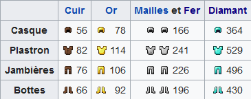

Les équipements dans Minecraft aident le joueur a progresser dans son aventure en le protégeant, amméliorant sa capacité a casser des blocs, a explorer des lieux mais aussi de survivre avec la chasse, la pêche et l'agriculture.
Les outils: ils permettent au joueur de progresser dans l'aventure mais aussi de survivre grace à l'agriculture, chasse et pêche. Ils servent aussi à récolter les ressources pour amméliorer son équipement tout au long de l'aventure.
Les armes: elles aident le joueurs à survivre face aux créatures hostiles mais aussi pour chasser des créatures passive pour récolter des ressources.
Les armures: Aident les joueurs a se protéger de leur environnement.
Équipement
Les armures: sont composé de 4 parties botte, jambière, plastron et casque. Elles aident le joueurs a se protéger des créatures hostile et des environnement hostile comme la lave grâce aux enchantements qui peuvent booster les caractéristiques des armures. Elles peuvent être fabriquer en différents matériaux comme le cuire, fer, maille, diamand et or. Chaques armures possèdent des point d'armure allant de 1() à 20 point d'armure() et des points de durabilité, si la durabilité de l'armure descend à 0 la partie de l'armure se brise et il faudra reconstruire la partie manquante.
Tableau de toutes les durabilités des partie d'armure.
Les outils: les outils aident les joueurs dans leur progression en survivant notament grâce à la chasse, pêche et l'agriculture. Mais aussi a casser les blocks de différent niveau de minage, les outils basique (pelle, pioche, hache) possèdent son type de block a casser, la pioche permet de casse tous ce qui est pierre et minerais, la hache tous ce qui s'apparente au bois, la pelle tous les block souple comme la terre et la neige. Certain outils peuvent faire des interactions différentes en utilisant un click droit, notament sur un mouton on peut récolter la laine, la houe permet de labourer le sol pour faire de l'agriculture, la canne a pêche permet de pêcher sur un étendue d'eau ou alors l'utiliser comme une lesse. Les outils peuvent se décliner en plusieur matériaux (bois, pierre, fer, or, diamand).
Les armes: Elles servent au joueurs a se défendre contre les créatures hostiles, on peut les fabriquer en bois, pierre, fer, or, diamand en fonction du matériaux utiliser les dégats varient ainsi que la durabilité, si on a la possibilité d'enchanté l'arme on peut augmenter les dégat de cette dernière ainsi que la durabilité mais aussi on peut rajouter du recul a l'arme ou alors la possibilité d'enflammé la cible. On peut récuperer du fil sur les toiles d'araigner. Les aimes aident aussi a survivre grâce a la chasse en chassant les créatures passives pour de la nourriture et autre ressources.